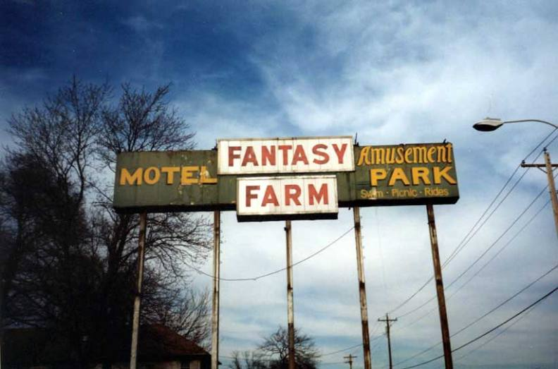
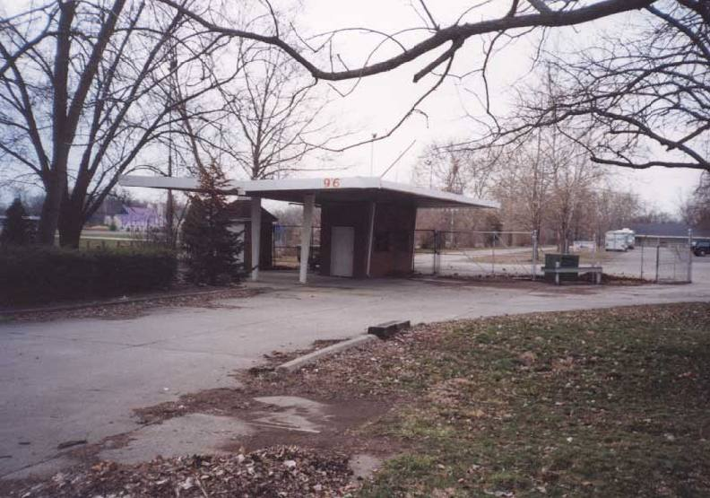
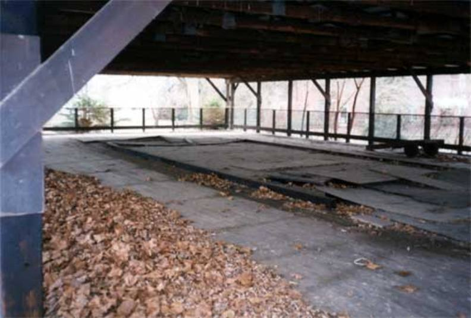
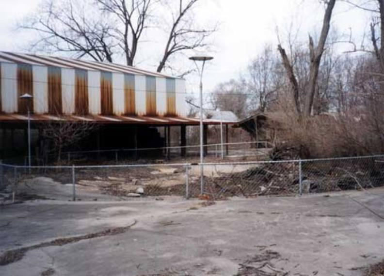
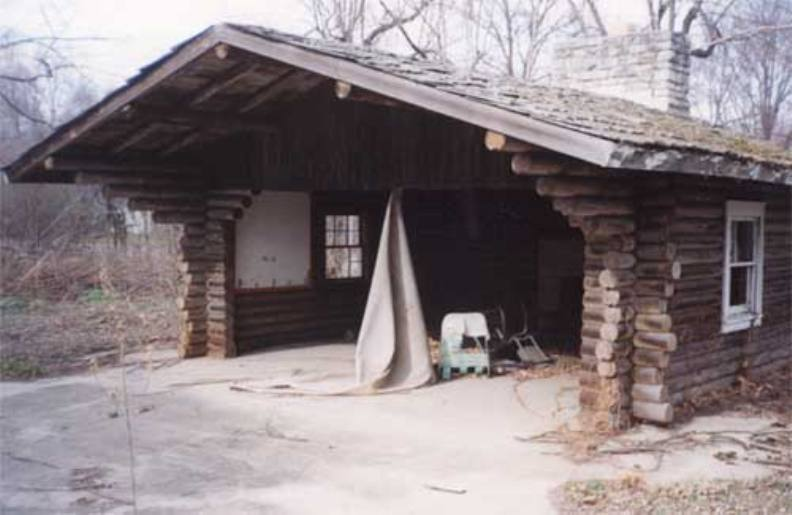
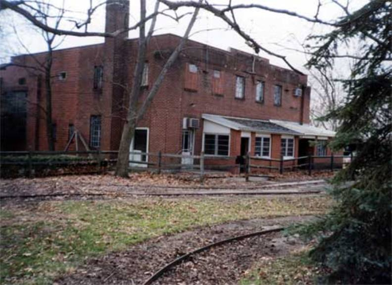
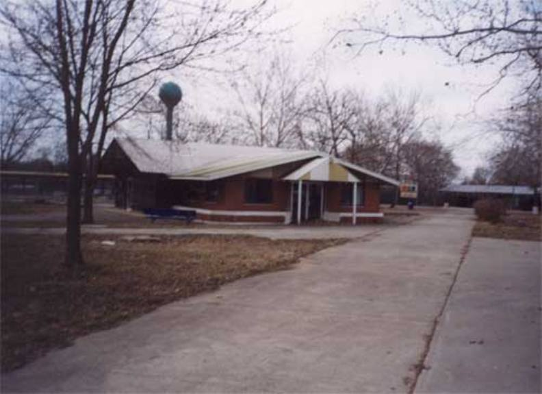
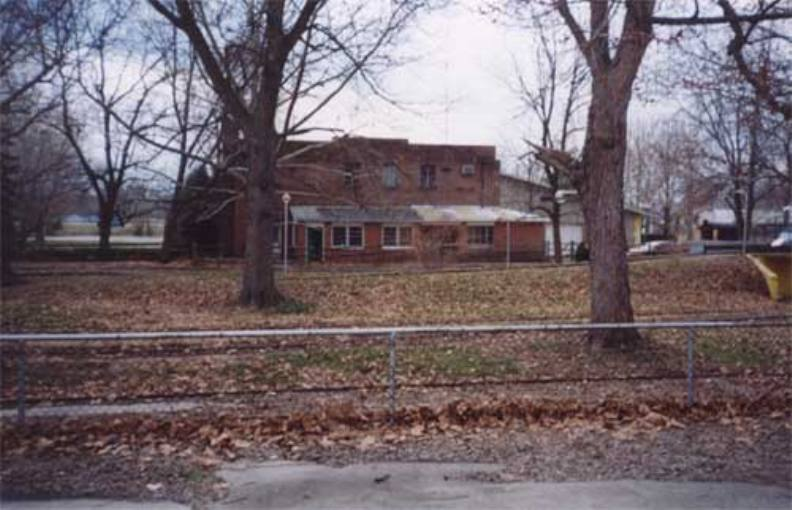

|
I finally found my Fantasy Farm pictures and was able to scan them. Fantasy farm is located right next door to American Amusement Park in an area of Ohio that no one seems to agree on a name for. I frequently get emails from people insisting that they know the name of the town for sure, but they often disagree with other people who also knew for sure. For this reason, I'm not saying what the name is.
Fantasy Farm has a great history that I plan to cover on this page eventally. Fantasy Farm was geared more toward Children than adults. I left quite a few things out here on my site. Charlies Forgotten Ohio site also has a Fantasy Farm section because we went together! The pictures have been brought down in quality and size to make the page load a little faster. |
|  |  |  |  |
| The main sign in front of the Fantasy Farm Hotel out front. | The old entrance gate | What appears to be a building for an old Whip ride. | A fence that would have surrounded a ride along with an old building. |
|  |  |  |  |
| Log Cabin | Building where turnpike cars were made (history will explain) | Another building | Turnpike car building again. |